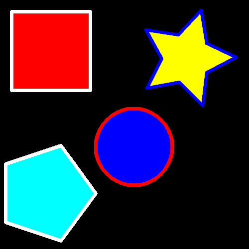

Assignment004B
Create the following four shapes using the shape tool. Use the same solid fill and stroke colors shown below. The fill is the inside color and the stroke is the border color (outer line). Right-click the image and view the properties to determine your canvas size!
